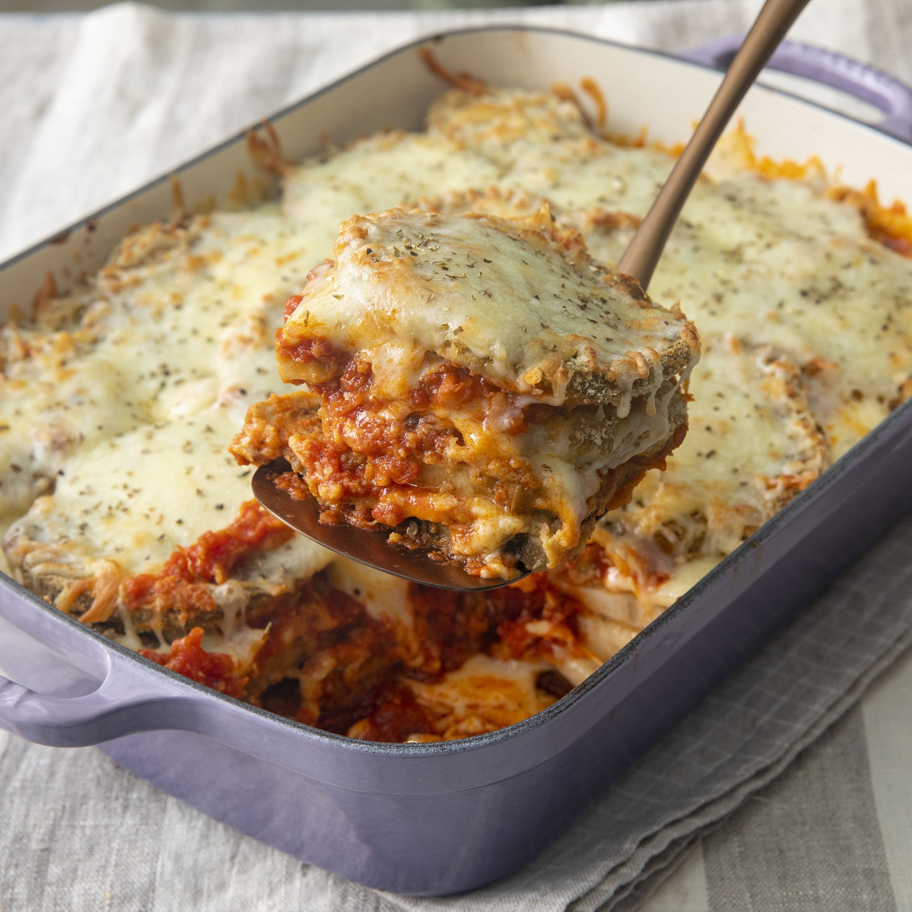

Eggplant Parmesan

Description
Homemade eggplant parmesan
Crispy and saucy eggplant recipe
Ingredients
- 3 large eggplant, peeled and thinly sliced
- 2 large eggs, beaten
- 4 cups Italian seasoned bread crumbs
Steps
- Preheat oven to 350 degrees F (175 degrees C).
-
Dip eggplant slices in beaten egg, then in bread crumbs to coat. Place
in a single layer on a baking sheet.
-
Bake in the preheated oven for 5 minutes. Flip and bake for 5 more
minutes.